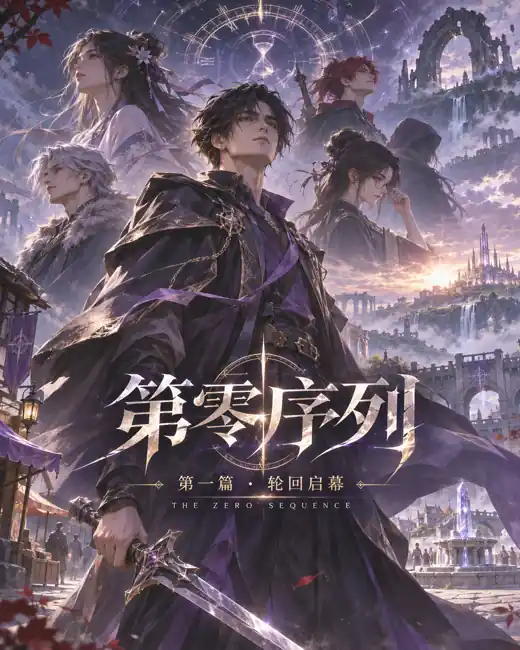

PART 01 · VISUAL ARCHIVE
轮回启幕
插画画廊
在文字之外，看见晨星镇的黎明、广阔城邦与险境的另一面。画廊会跟随你的阅读进度解锁，尚未读到的场景不会提前展示。
图片属于第一批视觉概念稿，暂不代表最终角色造型或场景定稿。将来会根据正式人物档案和小说设定继续校正。
返回第一篇目录正在读取此设备的解锁进度……
解锁进度记录在当前浏览器；阅读对应章节后，返回此页即可查看。图片采用 WebP 压缩，未解锁画面不会预先加载。
提示：如果你已经读过章节但没有解锁，可以回到该章底部点击「标记本章已读」。